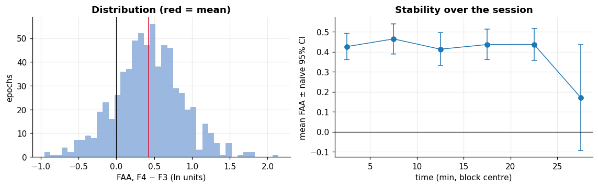
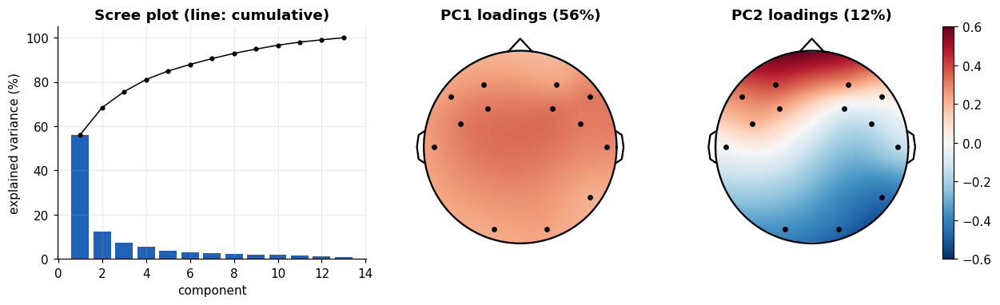
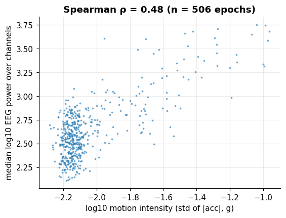

Lab: end-to-end pipeline and mini-project#
Learning objectives
- Chain quality control, filtering, epoching, rejection and feature extraction into one reproducible pipeline.
- Answer three analysis questions with the right statistics: frontal alpha asymmetry, principal components of the 13 usable channels, and the link between motion and EEG power.
- Report results honestly: sample sizes, effect sizes, uncertainty and limitations.
Everything you learned is now assembled into a short research-style analysis. Run each cell, read the output, and answer the questions at the end of each task before opening the solution.
The pipeline#
USE = [ch for ch in CH if ch != "p7"] # P7: contact grade 0 half of the time
idx = [CH.index(ch) for ch in USE]
keep = good2[idx].all(axis=0) # epochs clean on ALL 13 retained channels
print(f"{len(USE)} channels kept; {keep.sum()} of {n2} epochs kept ({keep.mean() * 100:.0f}%) = {keep.sum() * 2 / 60:.1f} min of data")
f_e, Pall = signal.periodogram(E2, fs=FS, window="hann", axis=-1) # (14, n2, n_freq)
bp = {b: bandpower(Pall, f_e, lo, hi) for b, (lo, hi) in BANDS.items()} # each (14, n2)
t_ep = (np.arange(n2) * 2 + 1) / 60 # epoch centre in minutes
print("band-power arrays:", {b: v.shape for b, v in bp.items()})
13 channels kept; 438 of 780 epochs kept (56%) = 14.6 min of data
band-power arrays: {'delta': (14, 780), 'theta': (14, 780), 'alpha': (14, 780), 'beta': (14, 780), 'low gamma': (14, 780)}Only 56% of the epochs pass all checks on all 13 channels: roughly 15 minutes of data out of 26. This is a typical outcome with a consumer headset in a movement-prone session, and it must be reported. Alternatively, each analysis can use only the channels it needs, which is what we do for the next task.
Task A: frontal alpha asymmetry#
Definition: Frontal alpha asymmetry (FAA)
\(\mathrm{FAA}=\ln P^{\alpha}_{\mathrm{right}}-\ln P^{\alpha}_{\mathrm{left}}\), computed here for F4−F3 and F8−F7 in each epoch. Because alpha power is inversely related to cortical activity, a positive FAA is often read as relatively greater left activity. The interpretation in psychology is debated; here we use it as a well-defined statistic to practise inference. The log-ratio makes it independent of overall amplitude and roughly symmetric.
def faa(left, right):
ok = good2[CH.index(left)] & good2[CH.index(right)]
v = np.log(bp["alpha"][CH.index(right)][ok]) - np.log(bp["alpha"][CH.index(left)][ok])
return v, t_ep[ok]
rows = []
for L_, R_ in (("f3", "f4"), ("f7", "f8")):
v, tv = faa(L_, R_)
n = len(v); r1 = np.corrcoef(v[:-1], v[1:])[0, 1]; n_eff = n * (1 - r1) / (1 + r1)
tt = stats.ttest_1samp(v, 0)
se_naive = v.std(ddof=1) / np.sqrt(n); se_adj = v.std(ddof=1) / np.sqrt(n_eff)
rows.append({"pair": f"{R_.upper()} − {L_.upper()}", "n epochs": n, "mean FAA": v.mean(), "Cohen d": v.mean() / v.std(ddof=1),
"lag-1 autocorr": r1, "n_eff": n_eff, "95% CI naive ±": 1.96 * se_naive, "95% CI adjusted ±": stats.t.ppf(.975, n_eff - 1) * se_adj,
"p (naive t-test)": tt.pvalue, "p (Wilcoxon)": stats.wilcoxon(v).pvalue})
faa_res = pd.DataFrame(rows).set_index("pair")
faa_res.T
| pair | F4 − F3 | F8 − F7 |
|---|---|---|
| n epochs | 676 | 697 |
| mean FAA | 0.4263 | 0.414 |
| Cohen d | 0.9467 | 0.7414 |
| lag-1 autocorr | 0.08074 | 0.169 |
| n_eff | 575 | 495.5 |
| 95% CI naive ± | 0.03395 | 0.04146 |
| 95% CI adjusted ± | 0.03689 | 0.04929 |
| p (naive t-test) | 5.801e-96 | 2.63e-68 |
| p (Wilcoxon) | 1.107e-76 | 1.768e-61 |
v34, tv34 = faa("f3", "f4")
blocks = np.digitize(tv34, np.arange(5, 26, 5)) # 5-minute blocks
fig, ax = plt.subplots(1, 2, figsize=(10.5, 3.4))
ax[0].hist(v34, bins=40, color="#9bb8e0"); ax[0].axvline(0, color="k", lw=.8); ax[0].axvline(v34.mean(), color="crimson")
ax[0].set_xlabel("FAA, F4 − F3 (ln units)"); ax[0].set_ylabel("epochs"); ax[0].set_title("Distribution (red = mean)")
bm = [v34[blocks == b].mean() for b in np.unique(blocks)]
be = [1.96 * v34[blocks == b].std(ddof=1) / np.sqrt((blocks == b).sum()) for b in np.unique(blocks)]
ax[1].errorbar(np.unique(blocks) * 5 + 2.5, bm, yerr=be, fmt="o-", capsize=3); ax[1].axhline(0, color="k", lw=.8)
ax[1].set_xlabel("time (min, block centre)"); ax[1].set_ylabel("mean FAA ± naive 95% CI"); ax[1].set_title("Stability over the session")
plt.tight_layout(); plt.show()

For F4−F3 the mean FAA is 0.43 with an adjusted 95% interval of ±0.04 (naive: ±0.03); the effective number of epochs is only about 575 out of 676 because consecutive epochs are correlated (lag-1 autocorrelation 0.08). Here the correction is modest (the epoch feature is only weakly autocorrelated), and the result is clear: the mean is far from 0 for both pairs (0.43 and 0.41), with large effect sizes (Cohen's \(d\) = 0.95 and 0.74). The right panel shows the mean per five-minute block: it is stable except for the last block, which is noisier. But statistical significance is not a physiological explanation. In Chapter 5 we found that the left frontal channels have systematically lower broadband amplitude than their right counterparts (for example F3−F4, \(d_z\approx -1\)). A left-right difference in electrode contact, sensor gain or head-band tension would produce exactly a positive FAA without any asymmetry in brain activity. Without a control (the same headset on a phantom, or reversed hemispheres), the safest conclusion is "a reproducible left-right amplitude asymmetry, of uncertain origin".
Task B: principal component analysis of the channels#
If the 13 channels were independent, each would carry its own variance. We saw in Chapter 5 that they are correlated. PCA finds orthogonal directions (linear combinations of channels, in the sense of the mixing model of Chapter 1) ordered by explained variance. With the standardised data matrix \(Z\) (channels × samples), the singular value decomposition \(Z=U\Sigma V^{\top}\) gives the principal axes (columns of \(U\)) and the explained variance ratios \(\sigma_k^2/\sum_j\sigma_j^2\).
Z = E2[idx][:, keep, :].reshape(len(idx), -1) # channels x samples of clean epochs
Zs = (Z - Z.mean(axis=1, keepdims=True)) / Z.std(axis=1, keepdims=True)
U, s_, Vt = np.linalg.svd(Zs, full_matrices=False)
evr = s_ ** 2 / np.sum(s_ ** 2)
print("explained variance of the first 5 components (%):", (evr[:5] * 100).round(1))
print("components needed for 90% of the variance:", int(np.searchsorted(np.cumsum(evr), .90)) + 1)
def topomap_sub(values, ax, title):
return topomap(values, ax, title, cmap="RdBu_r", vmin=-.6, vmax=.6, chs=USE)
fig, ax = plt.subplots(1, 3, figsize=(11.5, 3.6), gridspec_kw={"width_ratios": [1.1, 1, 1]})
ax[0].bar(range(1, len(evr) + 1), evr * 100, color="#1f62b8"); ax[0].plot(range(1, len(evr) + 1), np.cumsum(evr) * 100, "ko-", ms=3)
ax[0].set_xlabel("component"); ax[0].set_ylabel("explained variance (%)"); ax[0].set_title("Scree plot (line: cumulative)")
for k in (0, 1):
load = U[:, k] * (1 if U[:, k].mean() >= 0 or k else -1)
im = topomap_sub(load, ax[k + 1], f"PC{k + 1} loadings ({evr[k] * 100:.0f}%)")
plt.colorbar(im, ax=ax[2], fraction=.046)
plt.tight_layout(); plt.show()
explained variance of the first 5 components (%): [56.1 12.3 7.2 5.5 3.8] components needed for 90% of the variance: 7

The first component explains 56% of the variance and the first three about 76%; 7 components are needed for 90%. So the 13 channels contain far fewer than 13 independent "directions". The loading maps tell a story: PC1 mixes all channels with the same sign pattern (a global, widely spread component such as a common reference or widespread artifact), while PC2 contrasts front and back, hallmark of an anterior–posterior gradient. This is the principle behind artifact removal by ICA/PCA: components dominated by artifacts can be removed before reconstructing the signal.
Task C: does motion explain the EEG amplitude?#
We compare, epoch by epoch, the head-motion intensity (standard deviation of the accelerometer magnitude in the epoch) with the broadband EEG power (median across channels of the log mean square). We keep only the epochs before the accelerometer saturation found in Chapter 4.
mot = df.dropna(subset=["mot.accx"])
tm = t[mot.index]
amag = np.sqrt((mot[["mot.accx", "mot.accy", "mot.accz"]] ** 2).sum(axis=1)).to_numpy()
ep_of = (tm * FS // NS_).astype(int) # epoch number of every motion sample
acc_int = pd.Series(amag).groupby(ep_of).std() # motion intensity per epoch
acc_int = acc_int[(acc_int.index < n2) & ((acc_int.index + 1) * 2 < t_sat)]
eeg_pow = np.log10((E2[idx] ** 2).mean(axis=2) + 1e-9) # (13, n2) log power per epoch
eeg_med = np.median(eeg_pow, axis=0)
xm = np.log10(acc_int.values + 1e-4); ym = eeg_med[acc_int.index.to_numpy()]
rho_m, p_m = stats.spearmanr(xm, ym)
fig, ax = plt.subplots(figsize=(5.6, 4))
ax.plot(xm, ym, ".", ms=3, alpha=.5); ax.set_xlabel("log10 motion intensity (std of |acc|, g)"); ax.set_ylabel("median log10 EEG power over channels")
ax.set_title(f"Spearman ρ = {rho_m:.2f} (n = {len(xm)} epochs)"); plt.show()

The rank correlation between motion intensity and EEG power is 0.48 over 506 epochs. The correlation is positive and moderate: head movement explains part of the amplitude variability (\(\rho^2\approx0.23\) of the rank variance), but most of it is not explained by the accelerometer. The rest may be muscle tension, sweat, electrode drift or genuine neural variability. A moderate value like this one justifies using motion as one rejection criterion among others, not as the only one. As always, correlation is not causation, and the autocorrelation of both series makes the p-value (8.4e-31) optimistic.
Mini-project questions#
Answer each question in 2 to 5 lines, quoting numbers from the cells you ran. Open the hints only after trying.
Exercise: Q1 · Data quality
Report the duration, sampling rate, percentage of missing samples, and the percentage of epochs retained. Which channel would you exclude, and why? Which two quality indicators support your choice, and do they agree?
Show solution
Duration 25.99 min, \(f_s\approx128\) Hz, 0% missing samples (counter increments all equal to 1, no interpolated flag). P7 is excluded: its cq is 0 for about half of the recording and its amplitude statistics are the worst. The contact indicator (cq) and the signal-based one (sq) agree for P7, but cq alone would have wrongly kept the posterior channels O1, O2 and P8, which are noisy despite a grade of 4. Report the percentage of epochs kept printed above.
Exercise: Q2 · Spectrum
Estimate the peak frequency of the oscillation at O1/O2 and the exponent of the aperiodic background. Is the peak well inside the classical alpha band? What would you need to conclude that it is an alpha rhythm?
Show solution
Use the values of Chapter 8 (peak near 12–13 Hz, exponent from the fit). It lies at the upper edge of the alpha band. To conclude it is alpha you would need a manipulation with a known effect, such as eyes closed vs eyes open: alpha power at occipital sites increases markedly with eyes closed. The file has no event markers, so this cannot be tested here.
Exercise: Q3 · Statistics
Why are the p-values from the naive t-tests on epoch features too small? Name two ways to correct for it and say which one you used above.
Show solution
Because consecutive epochs are autocorrelated, so the effective number of independent observations is less than the number of epochs, and the standard error is underestimated. Corrections: (1) effective sample size from the lag-1 autocorrelation (used in Task A), (2) block bootstrap or permutation tests that resample blocks of consecutive epochs (used in Chapter 5 for the mean).
Exercise: Q4 · Extension (optional)
Repeat Task A for the pair T7/T8 or O1/O2, apply a Holm correction over the pairs you test, and compare the effect sizes. Then redo the analysis with a stricter threshold (100 µV on filtered data) and say whether your conclusions change.
Show solution
for L_, R_ in (("t7","t8"), ("o1","o2")):
v, _ = faa(L_, R_); print(L_, R_, len(v), v.mean().round(3), (v.mean()/v.std(ddof=1)).round(3), stats.ttest_1samp(v, 0).pvalue)
# threshold sensitivity: change `good2 = ptp2 < 200` to `ptp2 < 100`, then recompute bp and the FAA table.Robust conclusions keep the same sign and a similar effect size across thresholds; if they flip, say so in the report.